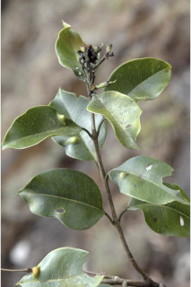

Images :



| Habit : | Large trees up to 15 m tall. |
| Leaves : | Leaves simple , opposite , decussate ; petiole 1-2.3 cm long, canaliculate , glabrous ; lamina 4-8 x 2.5-3 cm, elliptic , apex acuminate to caudate , base acute to attenuate , margin entire , pellucid gland dotted, coriaceous , glabrous , olive green when dry; midrib canaliculate above; intramarginal nerve present; secondary_nerves many, parallel , slender; tertiary_nerves obscure to admedially ramified . |
| Inflorescence / Flower : | Inflorescence dense cymose umbellules , terminal ; flowers white. |
| Fruit and Seed : | Berry oblong , crowned by persistent calyx , purple; seed one. |